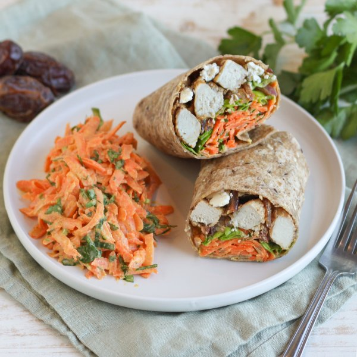

Chicken Wrap with Feta, Dates, Lettuce, Parsley & Curried Carrot Salad

Prep Time
35 min
Nutrition (per serving)
690.6 kcalCalories
53.1 gProtein
58.7 gCarbs
27 gFat
Full nutrition table
| Calories | 690.6 kcal |
| Total fat | 27 g |
| Saturated fat | 7.9 g |
| Trans fat | 1.1 g |
| Cholesterol | 150.8 mg |
| Sodium | 849.1 mg |
| Carbohydrates | 58.7 g |
| Fiber | 6.8 g |
| Sugars | 19.6 g |
| Protein | 53.1 g |
| Potassium | 1351.3 mg |
| Calcium | 335.5 mg |
| Iron | 5.3 mg |
| Vitamin A | 232.4 IU |
| Vitamin C | 33.8 mg |
| Vitamin D | 6.2 IU |
Cookware
Ingredients
- 1 headbutter (Boston) lettuce
- 6 mediumcarrots
- 1 ½ lbchicken breasts, boneless skinless
- 1 (4 oz) pkgcrumbled feta cheese
- 1 small bunchItalian (flat-leaf) parsley
- 4large flour tortillas
- 1lemon
- ¼ cupmedjool dates, pitted
- ½ cupplain Greek yogurt
- 1 mediumred onion
- apple cider vinegar
- black pepper
- cinnamon, ground
- cumin, ground
- curry powder
- Dijon mustard
- extra virgin olive oil
- salt
Steps
- Wash and dry the fresh produce.1 lemon
1 small bunch Italian (flat-leaf) parsley
6 medium carrots
1 head butter (Boston) lettuce - Juice lemon into a medium bowl.
- Shave parsley leaves off the stems; discard stems and mince the leaves. Add to the bowl with the lemon juice along with yogurt, oil, Dijon, and spices. Whisk to combine the dressing and set aside.½ cup plain Greek yogurt
2 tbsp extra virgin olive oil
2 tsp Dijon mustard
1 tsp curry powder
½ tsp cumin, ground
½ tsp salt
½ tsp black pepper - Preheat a large skillet over medium-high heat.
- While the skillet heats up, pat chicken dry with paper towels and cut into bite-sized pieces.1 ½ lb chicken breasts, boneless skinless
- Once the skillet is hot, add oil and swirl to coat the bottom. Add chicken and spices; cook, stirring occasionally, until golden and cooked through, 4-5 minutes. Using a slotted spoon, remove chicken to a plate; set aside. (Reserve skillet with cooking juices for later use.)4 tsp extra virgin olive oil
½ tsp salt
½ tsp black pepper
¼ tsp cinnamon, ground - Meanwhile, using a clean cutting board, peel, trim, and coarsely grate carrots. Add to the bowl with the dressing, stir to combine, and set aside.
- Peel, halve, and slice onion crosswise into thin half-moons.1 medium red onion
- Return skillet (with cooking juices) to medium heat. Add onion and cook, stirring occasionally, until softened, 3-4 minutes.
- While the onion is cooking, roughly chop dates.¼ cup medjool dates, pitted
- When the onion is soft, add vinegar to the skillet. Continue to cook, stirring constantly, until vinegar is reduced, about 1 minute.3 tbsp apple cider vinegar
- Return chicken to the skillet, along with any accumulated juices, then add the dates and feta. Stir to combine and remove from heat.1 (4 oz) pkg crumbled feta cheese
- Halve lettuce lengthwise, then slice crosswise into thin (shred-like) strips.
- Place tortillas on a flat surface, then divide chicken-feta mixture and lettuce between them. Top with a small portion of carrot salad and roll tightly to close. (Reserve remaining salad for serving.)4 large flour tortillas
- Cut wraps in half and divide between plates. Serve with remaining salad on the side and enjoy!